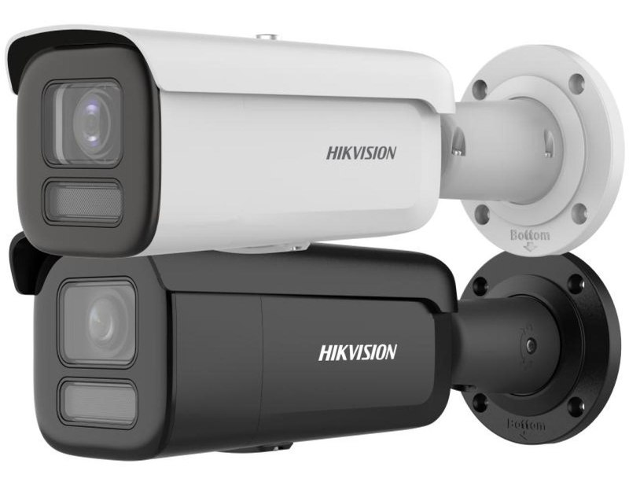

كل المنتجات ← كاميرات وأجهزة هيكفيجن
الموديل: DS-2CD2687G2HT-LIZS(2.8-12mm)

| الماركة | هيكفيجن |
|---|---|
| الموديل | DS-2CD2687G2HT-LIZS(2.8-12mm) |
| نوع المنتج | كاميرا بوليت خارجية IP |
| الكاميرا | |
| حساس الصورة | 1/1.8" Progressive Scan CMOS |
| أقصى دقة | 3840 × 2160 |
| أدنى إضاءة | Color: 0.0028 Lux @ (F1.2, AGC ON),0 Lux with light |
| سرعة الغالق | 1/3 s to 1/100,000 s |
| ليلي/نهاري | IR cut filter |
| ضبط الزاوية | Pan: 0° to 355°,tilt: 0° to 90°,rotate: 0° to 360° |
| العدسة | |
| Lens Type | Varifocal lens, motorized lens, 2.8 to 12 mm |
| Focal Length & FOV | 2.8 to 12 mm, horizontal FOV 112.3° to 41.2°, vertical FOV 58.1° to 23.1°, diagonal FOV 137.4° to 47.3° |
| تركيب العدسة | Integrated |
| Iris Type | Fixed |
| Aperture | F1.2 |
| Depth of Field | 1 m to ∞ |
| DORI | |
| DORI | Wide: D: 87 m, O: 35 m, R: 17 m, I: 9 m Tele: D: 216 m, O: 86 m, R: 43 m, I: 22 m |
| الإضاءة | |
| Supplement Light Type | IR,White Light |
| Supplement Light Range | Up to 60 m |
| Smart Supplement Light | Yes |
| IR Wavelength | 850 nm |
| الفيديو | |
| Main Stream | 50 Hz: 25 fps (3840 × 2160, 3200 × 1800, 2688 × 1520, 1920 × 1080, 1280 × 720) 60 Hz: 24 fps(3840 × 2160), 30 fps (3200 × 1800, 2688 × 1520, 1920 × 1080, 1280 × 720) |
| Sub-Stream | 50 Hz: 25 fps (1280 × 720, 640 × 480, 640 × 360) 60 Hz: 30 fps (1280 × 720, 640 × 480, 640 × 360) |
| Third Stream | 50 Hz: 10 fps (1920 × 1080, 1280 × 720, 640 × 480, 640 × 360) 60 Hz: 10 fps (1920 × 1080, 1280 × 720, 640 × 480, 640 × 360) *Third stream is supported under certain settings. |
| Video Compression | Main stream: H.265/H.264/H.264+/H.265+, Sub-stream: H.265/H.264/MJPEG, Third stream: H.265/H.264, *Third stream is supported under certain settings. |
| Video Bit Rate | 32 Kbps to 16 Mbps |
| H.264 Type | Baseline Profile,Main Profile,High Profile |
| H.265 Type | Main Profile |
| Bit Rate Control | CBR,VBR |
| Scalable Video Coding (SVC) | H.264 and H.265 encoding |
| Region of Interest (ROI) | 1 fixed region for main stream and sub-stream |
| الصوت | |
| Audio Compression | G.711ulaw/G.711alaw/G.722.1/G.726/MP2L2/PCM/MP3/AAC-LC |
| Audio Bit Rate | 64 Kbps (G.711ulaw/G.711alaw)/16 Kbps (G.722.1)/16 Kbps (G.726)/16 Kbps to 64 Kbps (AAC-LC)/32 to 192 Kbps (MP2L2)/8 to 320 Kbps (MP3) |
| Audio Sampling Rate | 8 kHz/16 kHz/32 kHz/44.1 kHz/48 kHz |
| Environment Noise Filtering | Yes |
| الشبكة | |
| Protocols | TCP/IP, ICMP, HTTP, HTTPS, FTP, DHCP, DNS, DDNS, RTP, RTSP, RTCP, NTP, UPnP, SMTP, IGMP, 802.1X, QoS, IPv4, IPv6, UDP, Bonjour, SSL/TLS, PPPoE, SNMP, WebSocket, WebSockets, SRTP, SFTP |
| Simultaneous Live View | Up to 6 channels |
| API | Open Network Video Interface (Profile S, Profile G, Profile T),ISAPI,SDK,ISUP |
| User/Host | Up to 32 users 3 user levels: administrator, operator, and user |
| Security | Password protection, complicated password, HTTPS encryption, 802.1X authentication (EAP-TLS, EAP-LEAP, EAP-MD5), watermark, IP address filter, basic and digest authentication for HTTP/HTTPS, WSSE and digest authentication for Open Network Video Interface, RTP/RTSP over HTTPS, control timeout settings, security audit log, TLS 1.1/1.2/1.3, host authentication (MAC address) |
| Network Storage | NAS (NFS, SMB/CIFS),Auto Network Replenishment (ANR) |
| Client | iVMS-4200,Hik-Connect,Hik-Central |
| Web Browser | Plug-in required live view: IE 10, IE 11, Plug-in free live view: Chrome 57.0+, Firefox 52.0+, Edge 89+, Local service: Chrome 57.0+, Firefox 52.0+, Edge 89+ |
| الصورة | |
| Image Parameters Switch | Yes |
| Image Settings | Rotate mode,saturation,brightness,contrast,sharpness,gain,white balance,adjustable by client software or web browser |
| Day/Night Switch | Day,Night,Auto,Schedule |
| Image Enhancement | BLC,HLC,3D DNR |
| SNR | ≥ 52 dB |
| Wide Dynamic Range (WDR) | 130 dB |
| Privacy Mask | 4 programmable polygon privacy masks |
| الواجهات | |
| Ethernet Interface | 1 RJ45 10 M/100 M self-adaptive Ethernet port |
| On-Board Storage | Built-in memory card slot, support microSD card, up to 512 GB |
| الصوت | 1 input (line in), two-core terminal block, max. input amplitude: 3.3 Vpp, input impedance: 4.7 KΩ, interface type: non-equilibrium, 1 output (line out), two-core terminal block, max. output amplitude: 3.3 Vpp, output impedance: 100 Ω, interface type: non-equilibrium |
| Alarm | 1 input, 1 output (max. 24 VDC/24 VAC, 1 A) |
| Reset Key | Yes |
| الأحداث | |
| Basic Event | Motion detection (support alarm triggering by specified target types (human and vehicle)),video tampering alarm,exception |
| Smart Event | Scene change detection |
| Linkage | Upload to FTP/NAS/memory card,notify surveillance center,trigger recording,trigger capture,send email,audible warning,trigger alarm output |
| وظائف التعلم العميق | |
| Face Capture | Yes |
| Perimeter Protection | Line crossing, intrusion, region entrance, region exiting Support alarm triggering by specified target types (human and vehicle) |
| عام | |
| Power | 12 VDC ± 25%, 1.21 A, max. 14.5 W,Ø5.5 mm coaxial power plug,reverse polarity protection, PoE: IEEE 802.3at, Class 4, max. 18 W |
| الخامة | Front cover: Metal, body: Metal, bracket: Metal |
| الأبعاد | 298 mm × 97.9 mm × 95.7 mm (11.8" × 3.9" × 3.8") |
| Package Dimension | 386 mm × 190 mm × 180 mm (15.2" × 7.5" × 7.1") |
| With Package Weight | Approx. 1639 g (3.6 lb.) |
| Storage Conditions | -30 °C to 60 °C (-22 °F to 140 °F). Humidity 95% or less (non-condensing) |
| Startup and Operating Conditions | -30 °C to 60 °C (-22 °F to 140 °F). Humidity 95% or less (non-condensing) |
| General Function | Heartbeat,mirror,password reset via email,pixel counter,anti-banding |
| Language | 33 languages: English, Russian, Estonian, Bulgarian, Hungarian, Greek, German, Italian, Czech, Slovak, French, Polish, Dutch, Portuguese, Spanish, Romanian, Danish, Swedish, Norwegian, Finnish, Croatian, Slovenian, Serbian, Turkish, Korean, Traditional Chinese, Thai, Vietnamese, Japanese, Latvian, Lithuanian, Portuguese (Brazil), Ukrainian |
| الاعتمادات | |
| EMC | CE-EMC: EN 55032: 2015, EN 61000-3-2:2019, EN 61000-3-3: 2013+A1:2019, EN 50130-4: 2011 +A1: 2014 |
| Safety | UL: UL 62368-1, CB: IEC 62368-1: 2014+A11, CE-LVD: EN 62368-1: 2014/A11: 2017 |
| Environment | CE-RoHS: 2011/65/EU |
| Protection | IP67: IEC 60529-2013,IK10: IEC 62262:2002 |